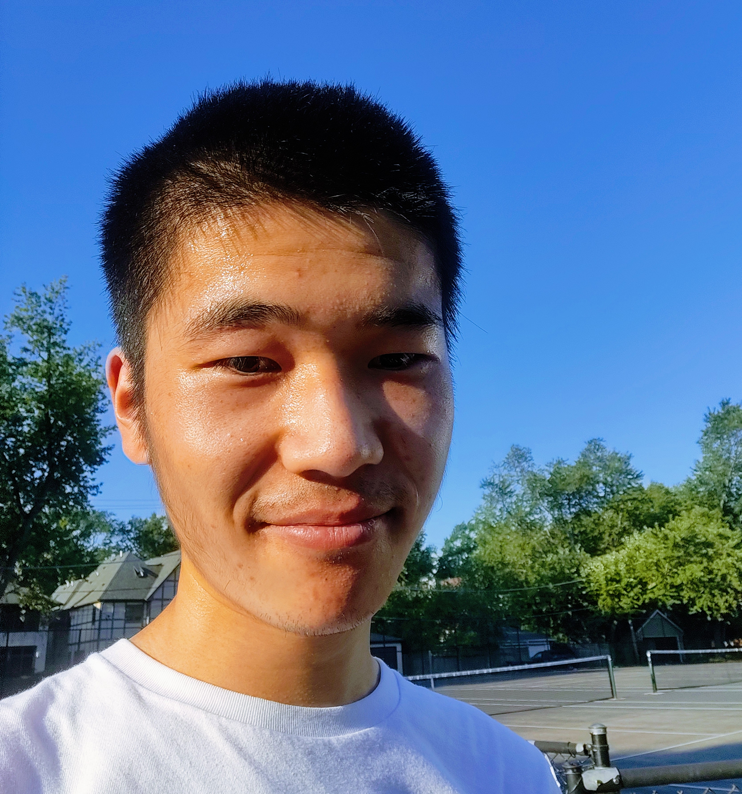

At Microsoft AI, I work on numerically stable and inference-efficient RL for reasoning and SWE climb.
Previously, I was a member of the Seed-Infra-Training framework team at ByteDance, where I built distributed training systems for Seed-VLM and Seedance models.
I graduated from Shanghai Jiao Tong University in 2019 and left the PhD program at UC Santa Barbara in 2022, a great place I will always cherish, where I met my wife.